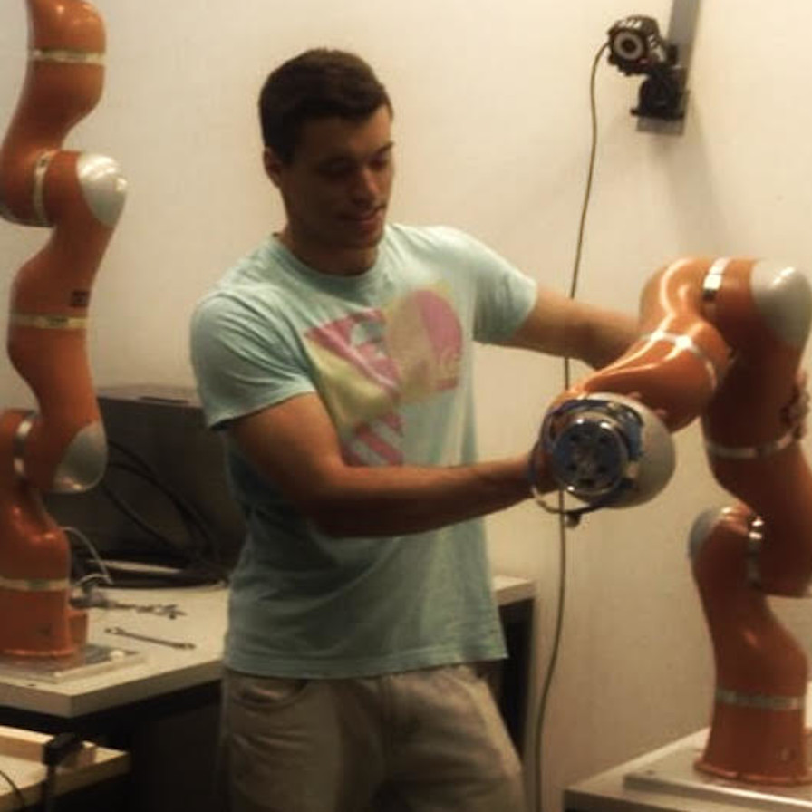
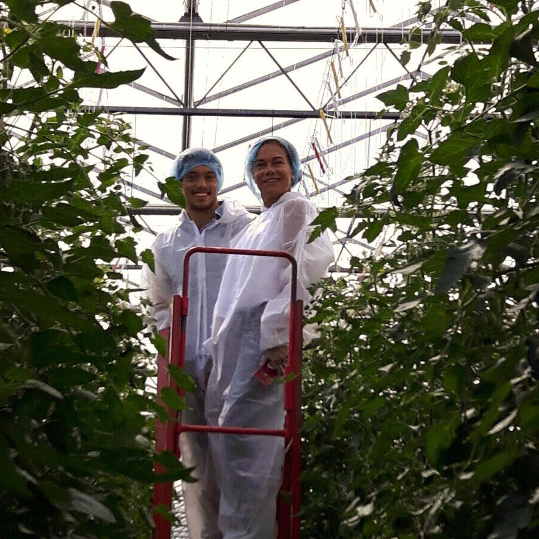

About me
Hey there!
I'm João, welcome to my personal page.
I alternate between research and building products.
Products
- Alpaca Law is a conversational AI specialised in Portugal laws and case laws.
- Optimal Agriculture is on a mission to grow safer, healthier food by deploying fully autonomous indoor farms outside every city on earth.
- Polys.art is an art collection that resulted from the search of the highest beauty with the fewest bits. Some pieces were done using AI and others were done manually by selected artists.
- Gymnast Training has simplified a science-based training program to gain strength without using weights.
- AI Coach was using human pose estimation to analyse athletes technique.
- many many more than are not worth mentioning..
Research
- I am interested in complex adaptable systems like evolution, economics and sociology.
- Especially proud of this paper: Mimicking Evolution with Reinforcement Learning.
- Was a Research Resident in Sakana AI in 2024/2025.
Education
- Started a PhD in Robotics and ML @EPFL (dropped out to build Optimal Agriculture)
- MSc in Biomedical engineering @IST
- BSc in Physics @IST
I am into personal growth, meaningful relationships, health and sports. Very proud of having represented Portugal at pole-vaulting in the European Youth Olympics, Belgrade 2007 :) !
|  |  |
|---|---|
| Life at EPFL | Life in a 🍅 Greenhouse (at Optimal Labs) |